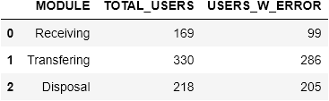
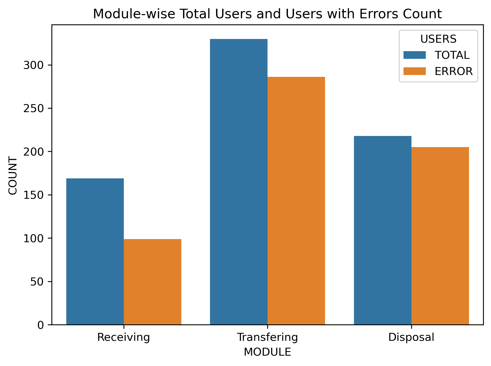

Accurate User Database Training Resource Optimization
Domain of problem: Supply Chain Management, Human Resource Management, Training and Development
Problem Statement:
Accenture Federal Services maintains a system for one of their federal clients which track the procurement, distribution, maintenance, and retirement of their assets. Users of this system need to be trained based on their roles and tasks to ensure the system is being used properly. At present, the training need is being identified manually and not analytically driven and proving to be inadequate. There is a need to build a model that can prioritize which users need training and the type of training they need so that scarce training resources are used optimally.
Importance of problem:
Users without sufficient training on the system are more prone to make errors than the trained ones. These errors have an adverse impact on the business as they result in losses in the form of time and money.
Summary:
- User 63, 53, 279, 270, 72 are the top 5 users with the highest weighted score indicating that they have the most adverse impact on the system and need the training the most urgently.
- There are 67 users committing errors in more than 1 module and need special focus.
- Location 101 has the highest aggregated weighted score of 10.95 with 18 users committing errors which warrant further investigation at this location.
- Also, the second location 141 has 21 users performing erroneous transactions which also calls for further exploration.
- Module-wise Total Users and Users with Errors show that ~95% of total users of the disposal module perform erroneous transactions. This is largely due to incorrect entries related to retirement dates and manual or missing document scan type.
- The transferring module also has a significantly high error rate of >85%.
- Implementation of the data-driven solution is expected to reduce error rates gradually over some time.

Module-wise Total and Erroneous Users Count list
Module-wise Total and Erroneous Users Count plot
